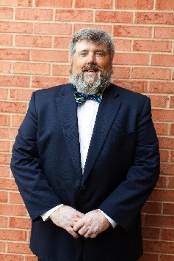

ELDER AND PREACHER
STEPHEN ROLLINS
New Englander by birth, Stephen, with his wife, Lydia, and two daughters, Sarah and Hannah,
moved to northern Virginia in 2000 to work with the church in Leesburg. They now enjoy 4
beautiful granddaughters. Stephen has preached for 33 years, ministering in Vermont, western
Massachusetts, and northern Virginia. Stephen fills the roles of preacher, teacher, and
shepherd in the Leesburg congregation. Preaching God's Word is his passion. Serving as a
shepherd in God's church has always been a goal of Stephen's from his teenage years when his
dad served as an elder in Seabrook, NH. Stephen was chosen as an Elder in 2008. He loves the
way the pastoral aspect of ministry brings a person into intimate and meaningful relationships
with the members of God's flock. He is thankful to the Leesburg congregation for embracing him
in this dual aspect of God's service as both an Elder and Preacher.